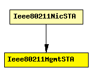

File: NetworkInterfaces/Ieee80211/Mgmt/Ieee80211MgmtSTA.ned
C++ definition: click here
Used in 802.11 infrastructure mode: handles management frames for a station (STA).
Relies on the MAC layer (Ieee80211Mac) for reception and transmission of frames.
Author: Andras Varga
The following diagram shows usage relationships between modules, networks and channels. Unresolved module (and channel) types are missing from the diagram. Click here to see the full picture.
If a module type shows up more than once, that means it has been defined in more than one NED file.
| Ieee80211NicSTA | This NIC implements an 802.11 network interface card, in a STA, using infrastructure mode. |
| Name | Type | Description |
|---|---|---|
| frameCapacity | numeric const | maximum queue length |
| Name | Direction | Description |
|---|---|---|
| uppergateIn | input | |
| uppergateOut | output | |
| macIn | input | |
| macOut | output | |
| agentIn | input | |
| agentOut | output |
simple Ieee80211MgmtSTA parameters: frameCapacity: numeric const; // maximum queue length gates: in: uppergateIn; out: uppergateOut; in: macIn; out: macOut; in: agentIn; out: agentOut; endsimple